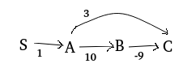
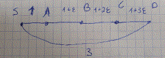

We will term this problem SSSP-ONBE (for odd number of blue edges)
Let be a shortest path from s to u. and let P have an odd number of blue edges. Then if is a blue edge then is a shortest path from to which has an even number of blue edges. Similarly, if is a red edge then is a shortest path from to which has an odd number of blue edges.
INITIALIZE-SINGLE-SOURCE-ONBE(G=(V,E),s):
for each vertex v in V:
d.odd[v] = infinity
d.even[v] = infinity
pi.odd[v] = infinity
pi.even[v] = infinity
RELAX-ONBE((u,v),w,C):
if C((u,v))="blue":
if d.odd[v] > d.even[u]+w(u,v):
d.odd[v] = d.even[u]+w(u,v)
pi.odd[v] = u
if d.even[v] > d.odd[u]+w(u,v):
d.even[v] = d.odd[u]+w(u,v)
pi.even[v] = u
else: # color is red
if d.odd[v] > d.odd[u]+w(u,v):
d.odd[v] = d.odd[u]+w(u,v)
pi.odd[v] = u
if d.even[v] > d.even[u]+w(u,v):
d.even[v] = d.even[u]+w(u,v)
pi.even[v] = u
SSSP-ONBE(G=(V,E),w,s,C):
INITIALIZE-SINGLE-SOURCE-ONBE(G=(V,E),s)
for i=1 to |V|-1:
for (u,v) in E:
RELAX-ONBE((u,v),w,C)
Claim A: If the shortest path from s to u has a last edge which is blue, the algorithm will find it.
Proof: by induction, the base case is a path of a single blue edge. The induction is on the length of the path, and follows from the Main Observation and from the lemmas presented in class.
Claim B: If the shortest path from s to u has a last edge which is red, the algorithm will find it.
Proof: by induction, the base case is a u=s. The induction is on the length of the path, and follows from the Observation and from the lemmas presented in class.
Once our SSSP-ONBE algorithm ran, we read the results (for a node v) as follows:
d.odd[v]pi.odd[v], let's call it u.pi.even[u]. If (u,v) is red, we use pi.odd[u]. This logic continues until we reach s.The runtime is on par with Bellman-Ford's, since we added operations in each step. So it remains .
We assume every node is reachable from s.
Q.E.D.
Dijkstra will NOT compute the correct distance.
Consider the graph

The true shortest distance from A to C is 1. However the algorithm execution will proceed as follows:
So edge BC will not be handled at all and the distance to C will be incorrect.
Dijkstra will compute the CORRECT distances.
Proof:
Let's denote S's neighbors M:
Claim 1: Every shortest path from s to a node will not have a negative-weight (abbreviated N.W.) edge, except possibly as the first edge in the path.
Proof: for a path to use a negative weight edge, not as a first edge, the path has to go back to s (since the only N.W.-edges are from s). We showed in class that shortest paths in graphs that do not have negative circles, do not contain circles, so paths cannot go back to s and therefore will not have N.W. edges except possibly the first.
Claim 2: The invariant still holds.
Proof: The edges between and are have all non-negative weights as long as is not the first node in the path i.e. , the edges betwen and will be positive.
since while is added to before any other node is added.
The statement is FALSE. The minimum spanning tree is different than a tree of minimum-distance paths from a particular source node.
consider the following graph:

The distance from S to D is 3 directly, or through ABCD. Since Prim is "interested" in adding the lightest-weight edge among the edges crossing the cut, it will contract on SA, AB, BC, CD. these edges are all lighter than SD. However, in Dijkstra's algorithm, the edge SD will be used since it is on the shortest path from S to D.
Explanation: the base case is that a node has a single path to itself. The recursion is based on the fact that if there are k ways to get from s to a node A, and A has an edge to t, then there are k ways to get from s to t through A. Other nodes which have edges to t will add to the path count total.
Explanation: our goal is to determine the number of paths from s to each node A in the graph. Once we accounted for all the paths going into A, we can use this information to update the total number of paths of all the nodes which A touches.
The topological sorting order is useful in this respect since it guarantees that when we reach a node A, we already treated the nodes that have edges going into A.
Note that topological order guarantees s will be first (since if it were not first, the first node by definition of the problem have edges going into it from some other node(s), therefore those edges would point left, or "backwards") and that t will be last (since if it were not last, some edges going out of the last node would point backwards).
The solution here is an extension of Dijkstra. In Dijkstra, we maintain for every node u d[u], the shortest distance to that node. It might happen in the RELAX subroutine that the comparison shows a new path with the same distance, in normal Dijkstra we ignore this case since we only need one possible shortest path. Here's a modified version of RELAX to be plugged into Dijksta to keep track of the number of different paths:
RELAX-CDSP((u,v),w):
The initialization of p is as in the previous problem,
Explanation: